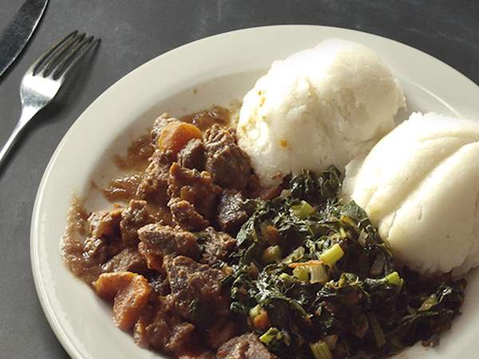

Ugali

Ugali, or nsima, is a type of stiff maize flour porridge made in Africa.
Ugali (Corn Fufu) — Easy to prep, soft, very delightful and filling side dish. A perfect cornmeal side dish for greens, stews, and proteins.
Ingredients
- 4 cups or more water
- 2 cups fine corn meal
- 1/2 - 1 teaspoon salt
Steps
Steps
- Add about 4 cups of water to a heavy large saucepan. Add ½ teaspoons of salt. Bring to a boil, remove about a cup and set aside
- Gradually whisk in the cornmeal, until you have add the whole thing in the pot, a little bit at a time and keep stirring with a wooden spoon to prevent any lumps. You may have to remove saucepan from heat while trying to get rid of lumps- to prevent burns.
- Reduce the heat to low and cook until the mixture thickens.
- Then add the remaining boiled water, reduce heat, cover, and cook- for about 10 or more. You may add some more water if desired. Turn off the heat. Scoop out balls with a small bowl – shake and form a ball by rolling around a bowl.
Return to Main Page